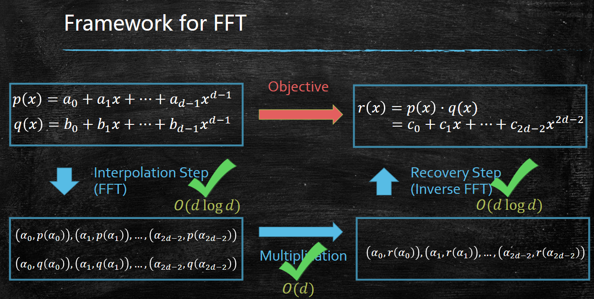

分治
阅读信息
约 2 个字 5 分钟 本页总访问量：加载中... 次
Number Multiplication
- Calculate by dividing the two n-digit into two parts and recursion -- \(O(n^2)\)
- Improvement;
where \(ad + bc = (a + c) (b + d) - ac - bd\), using 3 times of multiplication instead of 4.
We have time complexity (multiply times) of \(\displaystyle O(3^{\log n}) \approx O(n^{1.6})\)
If \(n\) is not 2's power?
Add \(0\).
Karatsuba Algorithm
To be accurate, \(3T(n / 2)\) should be \(3T(n / 2 + 1)\), as \(a + b, c + d\) may be of \((2n + 1)\)-bit length (due to carry).
Other better algorithms
- Toom-Cook: dividing into 3 parts, reduce 9 multiplication into 5 times. → \(O(n^{1.465})\)
- Schonhage-Strassen (\(O(n \log n \log log n)\))... (based on FFT)
Matrix multiplication
Directly calculate, \(O(n^3)\)
Strassen’s magical idea:
then
reducing 8 multiplication into 7.
Others: - Strassen: \(n^\omega, \omega \leq \log_2^7\) - Conjecture (猜想) \(\omega = 2 + \varepsilon\) for any \(\varepsilon > 0\).
Sorting
(Omitted)
Merge Sort analysis:
So
The lower bound of compare sorting is \(\Omega(n \log n)\)
Total number of possible outputs is \(3^{K(n)}\) if \(K(n)\) comparisons are made.
The total number of possible orders is \(n!\), and the algorighm needs to distinguish them. So
Master Theorem
If \(T(n) = aT(n / b) + O(n^d)\), then
Selection Problem
Find the \(k\)-th smallest integer among \(x_1, \cdots, x_n\),
A solution the same as quick sort: select the arbitrary item \(x_0\) and divide the array into \(L: x < x_0, M: x = x_0, R: x > x_0\), and recurse.
However, the worse case is \(O(n^2)\).
Median of the medians (1973)
step1. partition S into subsets with size 5 (\(O(n)\))
step2. find the medians of the median of each subset (\(O(n)\))
step3. fix \(x_0\) to be the median of all the medians (by recursion: the \(n / 2\) least) (\(T(n / 5)\))
Analysis: there is about \(3n / 10\) numbers larger than \(x_0\) in the worst case, i.e. \(\text{the-} 3 / 10 \text{-th} \leq x_0 \leq \text{the-} 7 / 10 \text{-th}\) (Why?)
So \(T(n) = T(n / 5) + T(7n / 10) + O(n)\)
\(T(n) --> 0.9T(n)\) after each iteration, so we guess \(T(n) \leq Bn\).
holds if \(B \geq 10C\).
So \(T(n) = O(n)\)
So why we divide into size 5?
Assume we divide into size \(t\), then \(\displaystyle x_0 \in \left[\frac{3t - 1}{4t}, \frac{t + 1}{4t}\right]\) (when \(t\) is odd). So
\(T(n) = O(n)\) iff. \(\displaystyle \frac{1}{t} + \frac{(3t - 1)}{4t} \leq 1\) iff. \(t \geq 5\).
- If \(t = 3\), \(T(n) = O(n \log n)\)
Quick Sort
By Median of the medians, we have \(O(n)\) to find the median number. So
However, it is low in practice! (Median of the medians is low due to the large constant \(B\)!)
Choose the pivot item by random:
let \(a_i\): the \(i\)-th smallest number in the array, \(\displaystyle X_{ij} =\begin{cases}1, & a_i, a_j \text{ have been compared} \\ 0, &\text{otherwise}\end{cases}\), and \(X: \text{Total compare times}\).
So we have \(\mathbb{E}(X) = \mathbb{E}\sum X_{ij} = \sum P(X_{ij} = 1)\).
\(X_{ij} = 0\) iff. \(a_i, a_j\) have been divided into 2 different groups. Noting that all the number will be chosen once during the whole algorithm, and we only pay attention to the first number chosen between \(a_i, a_j\). So \(\displaystyle P(X_{ij} = 1) = \frac{2}{j - i + 1}\) (they are not divided at first).
So \(\displaystyle \mathbb{E}(X) = \sum \frac{2}{j - i + 1} = \Theta (n \log n)\)
The derivation
Let \(d = j - i\)
Closest Pairs
Find the closest dot pair on the 2-D plane.
Polynomial Multiplication -- FFT
Let \(p(x) = a_0 + \ldots + a_{d - 1}x^{d - 1}, q(x) = b_0 + \ldots + b_{d - 1}x^{d - 1}\).
Solution 1: Adapting Karatsuba Algorithm → \(O(d^{\log_2 3})\)
A \(O(d \log d)\) solution: FFT

step1. Choose \(2d - 1\) distinct numbers \(a_0, \cdots, a_{2d - 2}\), and compute \(p(a_i), q(a_i)\)
We can view polynomial evaluation as a matrix–vector multiplication:
Directly compute every \(p(a_i), q(a_i)\): \(O(d^2)\) → bad!
However, computing each \(p(a_i)\) requires \(O(d)\) time!
Noting that if we let
then
Let \(a_1 = - a_0, a_3 = -a_2, \cdots\)
By this we can just compute half of \(p(a_i)\). So with the same task size, we reduce degree \(d\) to \(d / 2\).
Then recursively compute \(p_e\) and \(p_o\), total time complexity \(O(d \log d)\).
To ensure the recurse is continuous, in practice we use the unit roots: \(\displaystyle \omega = \mathrm{e}^{\frac{2\pi}{d}i}\)
| Text Only | |
|---|---|
step2. Compute \(r(a_i) = p(a_i)q(a_i)\), \(O(d)\).
step3. Compute \(r(x)\).
And due to \(\displaystyle \frac{1}{\sqrt{d}}A\) is orthonormal, \(\displaystyle \left(\frac{1}{\sqrt{d}}A\right)^{-1} = \left(\frac{1}{\sqrt{d}}A\right)^* = \overline{\left(\frac{1}{\sqrt{d}}A\right)^T}\).
So \(\displaystyle A(\omega)^{-1} = \frac{1}{d}A(\omega)^*\). Noting:
So \(\displaystyle A(\omega)^{-1} = \frac{1}{D}\cdot A\left(\omega^{-1}\right)\)
It is same as compute \(\displaystyle s\left(x\right) = \frac{r(1)}{d} + \frac{r(\omega)}{d}x + \ldots + \frac{r(\omega^{d - 1})}{d}x^{d - 1}\) with \(x = \omega^{-1}, \ldots, \omega^{-(d - 1)}\). So we can apply function FFT in \(O(d \log d)\)!